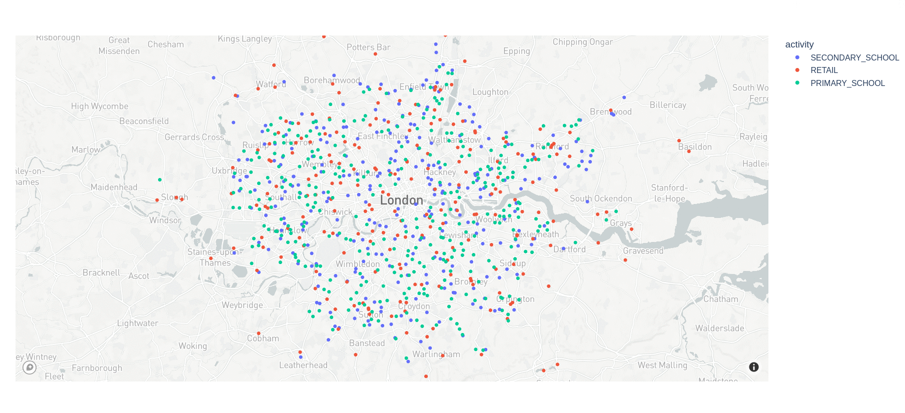

3 Using the SPC output file
Once you download or generate an SPC output file for your study area, how do you use it? Each study area consists of one .pb or protocol buffer file. This file efficiently encodes data following this schema. Read more about what data is contained in the output.
You can read the “protobuf” (shorthand for a protocol buffer file) in any supported language, and then extract and transform just the parts of the data you want for your model.
We have examples for Python below, but feel free to request other languages.
3.1 Python
To work with SPC protobufs in Python, you need two dependencies setup:
- The protobuf library
- You can install system-wide with
pip install protobuf - Or add as a dependency to a conda, poetry, etc environment
- You can install system-wide with
- The generated Python library, synthpop_pb2.py
- You can download a copy of this file into your codebase, then
import synthpop_pb2 - You can also generate the file yourself, following the docs:
protoc --python_out=python/ synthpop.proto
- You can download a copy of this file into your codebase, then
3.1.1 Converting .pb file to JSON format
To interactively explore the data, viewing JSON is much easier. It shows the same structure as the protobuf, but in a human-readable text format. The example below uses a small Python script:
# Download a file
wget https://ramp0storage.blob.core.windows.net/spc-output/v1/rutland.pb.gz
# Uncompress
gunzip rutland.pb.gz
# Convert the .pb to JSON
python3 python/protobuf_to_json.py data/output/rutland.pb > rutland.json
# View the output
less rutland.json3.1.2 Converting to numpy arrays
The ASPICS project simulates the spread of COVID through a population. The code uses numpy, and this script converts the protobuf to a bunch of different numpy arrays.
Note the ASPICS code doesn’t keep using the generated Python protobuf classes for the rest of the pipeline. Data frames and numpy arrays may be more familiar and appropriate. The protobuf is a format optimized for reading and writing; you don’t need to use it throughout all of your model code.
3.1.3 Visualizing venues
Use this script to read a protobuf file, then draws a dot for every venue, color-coded by activity.
